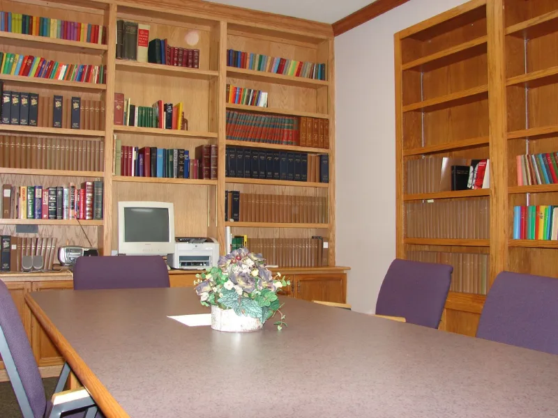

The Watchtower's own publications admit these facts. You can make this point from their library alone.
In 2015 and 2016 the Australian Royal Commission looked at the Jehovah's Witnesses. It was Case Study 29.
It worked from their own files. It found claims of child sexual abuse against 1,006 members since 1950.
Not one had been passed to the police, or to anyone else outside.
Elders take no action without two witnesses, or a confession. That rule was applied to child sexual abuse.
It is a crime that almost never has a second witness. Survivors had to speak in front of the accused, or be questioned about him, by panels of men.
And the shunning rule punished victims who left. The rule still governs internal cases today.
Geoffrey Jackson gave evidence on August 14, 2015. He was asked if the Governing Body sees itself as God's spokesmen on earth.
He answered: "That, I think, would seem to be quite presumptuous, to say that we are the only spokesperson that God is using." Decades of their own books say exactly that.
Elders were told to obey reporting laws where they existed. In those years, most Australian states did not require clergy to report.
No victim was ever barred from going to the police. The elders deal with sin and membership.
Crime belongs to the family and the state. The two-witness rule comes from Deuteronomy 19:15 and Matthew 18:16, and it governs only church hearings.
Under newer policy, one credible claim now brings limits on the accused. And abuse happens in every institution, so any rate needs a baseline.
They admit this themselves. The figure of 1,006 comes from their own files, handed over under summons.
The zero-reports finding is a formal conclusion of a government inquiry. It followed sworn evidence from senior men.
"Victims were free to report" is the real steelman, and you should say it out loud. The Commission weighed it and found it fell short.
It named the reason: the distrust of outside authority the organization teaches.
"A thousand and six accused men, in your own files, and not one call to the police. What should have happened?"

Most states did not require clergy to report, and no victim was ever barred.
Their defense, given on oath and in written submissions, runs like this. Elders were told to obey reporting laws where those laws existed. In those years, most Australian states did not require clergy to report. No victim or family was ever barred from going to police.
Elders deal with sin and with membership. Crime belongs to the family and the state. The two-witness rule governs only church hearings, and it comes from Deuteronomy 19:15 and Matthew 18:16. Under newer policy, one credible claim still brings limits on the accused. And abuse happens in every institution, so any rate needs a baseline beside it.
They admit it themselves. 1,006 accused men, and not one call to police.
The figure of 1,006 comes from their own files, handed over under summons. The zero-reports finding is a formal conclusion of a government inquiry. So are the findings on the two-witness rule. Both followed sworn evidence from senior men, including a member of the Governing Body.
'Victims were free to report' is the real steelman, and you should say it. The Commission weighed it and found it fell short. It named the reason: the distrust of outside authority this body teaches.
Severity is critical.